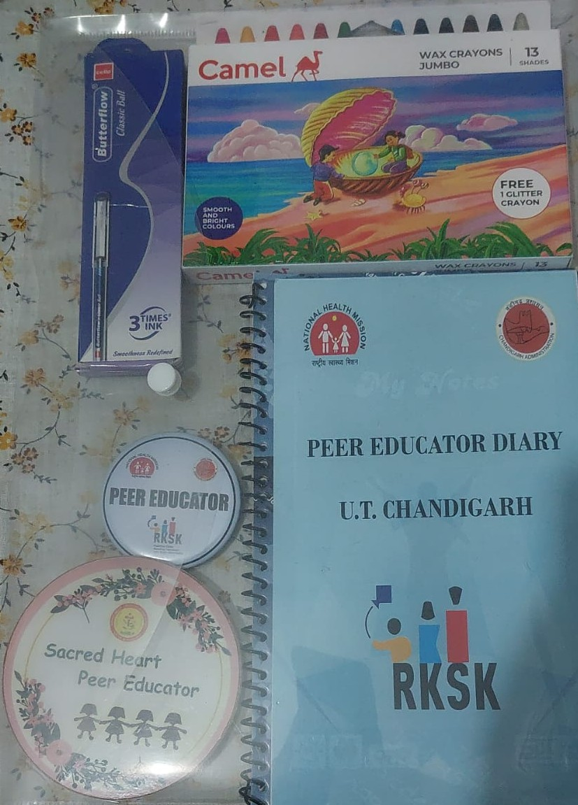

Learning to lead through awareness
Being a Peer Educator was not only about giving speeches. It was about learning how to speak to students about issues that actually affect their lives: safety, health, stress, relationships, peer pressure, personal growth, and the courage to ask for help when needed.
Through this role, I got the opportunity to participate in training sessions, conduct awareness activities, host interactive discussions, and help create a more informed and supportive school environment. It helped me understand that leadership is not always loud or formal. Sometimes, it begins with starting the right conversation.